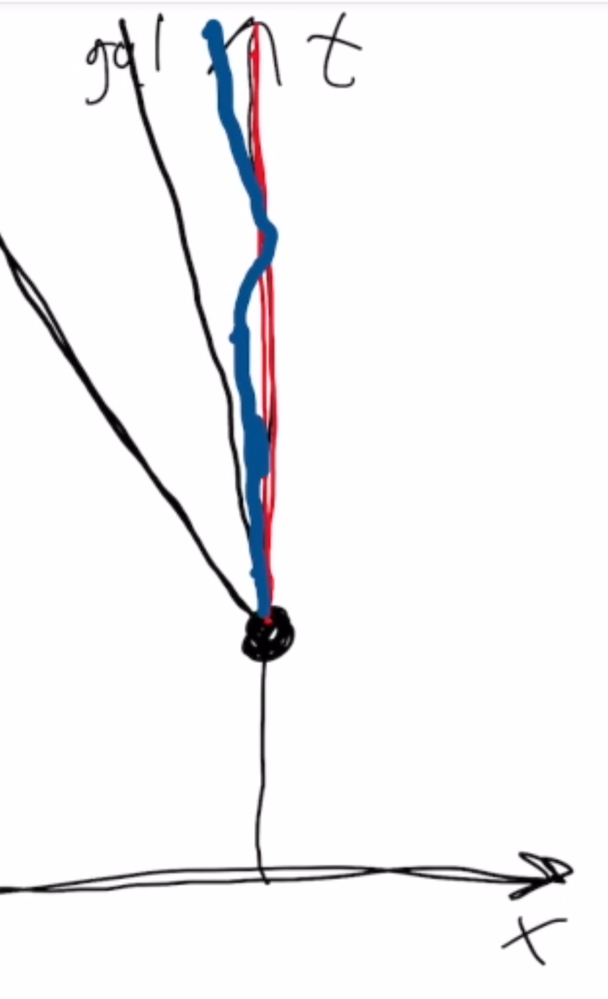

Forrige side🙂 🙁Maksimal aldringPADLET
Det betyr at hvis du nå går til rødt romskip sitt referansesystem og ser på verdenslinja som du der tegnet for rødt romskip sett fra sitt eget referansesystem:

...så er den like lang. Tidromsavstanden s for den røde linjen her og i det foregående diagrammet er den samme siden tidromsavstanden er uavhengig av referansesystem. Men merk deg noe mer: i rødt romskip sitt referansesystem så ser vi her at linja bare går rett opp langs tidsaksen. Det betyr at tidromsavstanden s er et mål på egentida τ. Husk at egentida τ er et tidsbegrep som er bundet opp til et legeme: Egentiden er tiden målt på klokka i legemets eget referansesystem. Egentiden τ som har gått mellom to eventer er en tolkning av tidromsavstanden s. I eksemplet vårt her så snakker vi da om egentida/tidromsavstanden mellom to eventer som skjer i rødt romskip, et ved starten av animasjonen og et ved slutten.